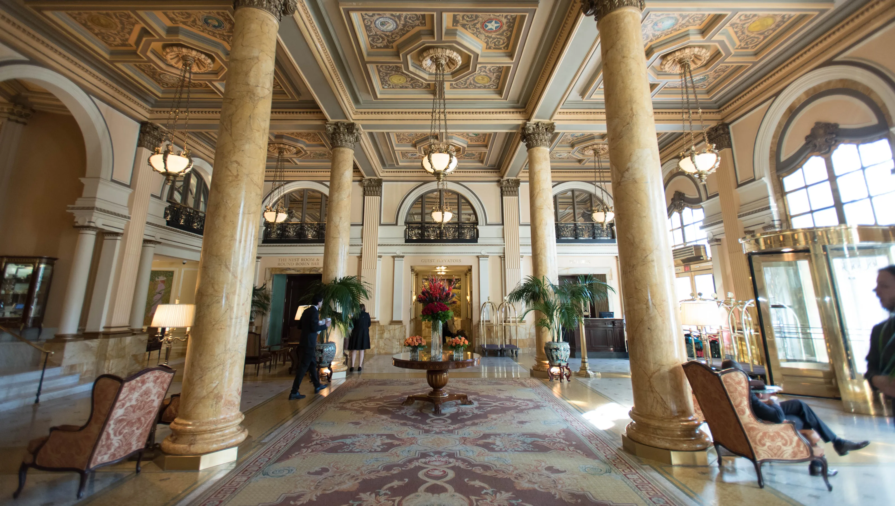
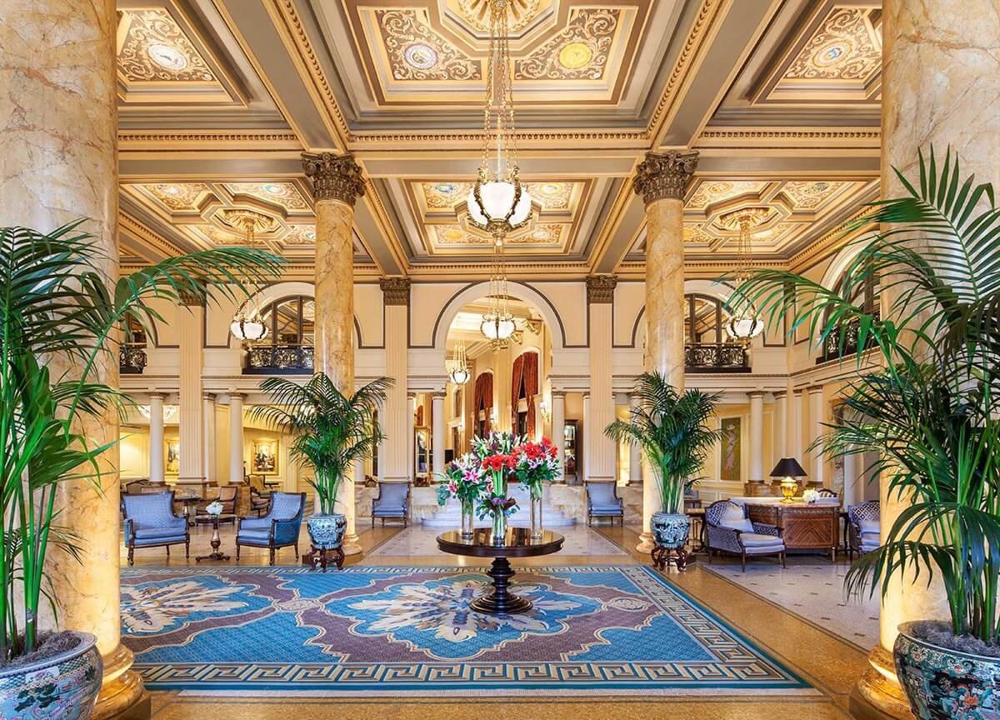
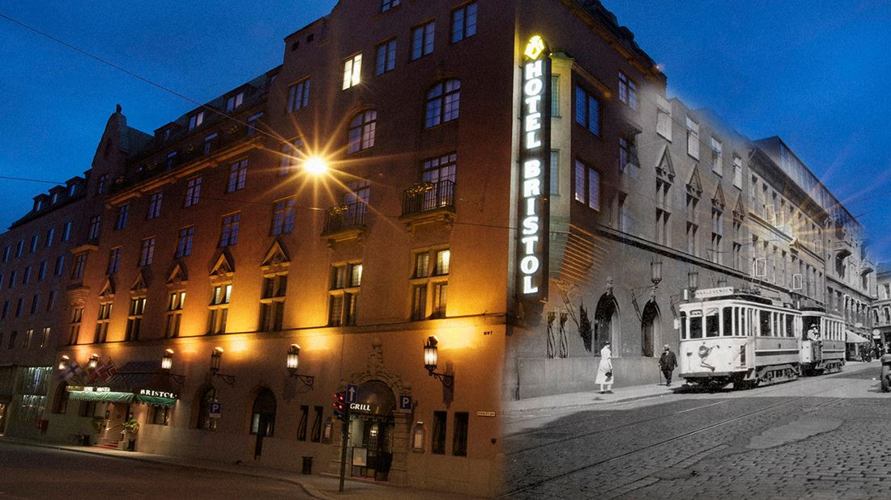
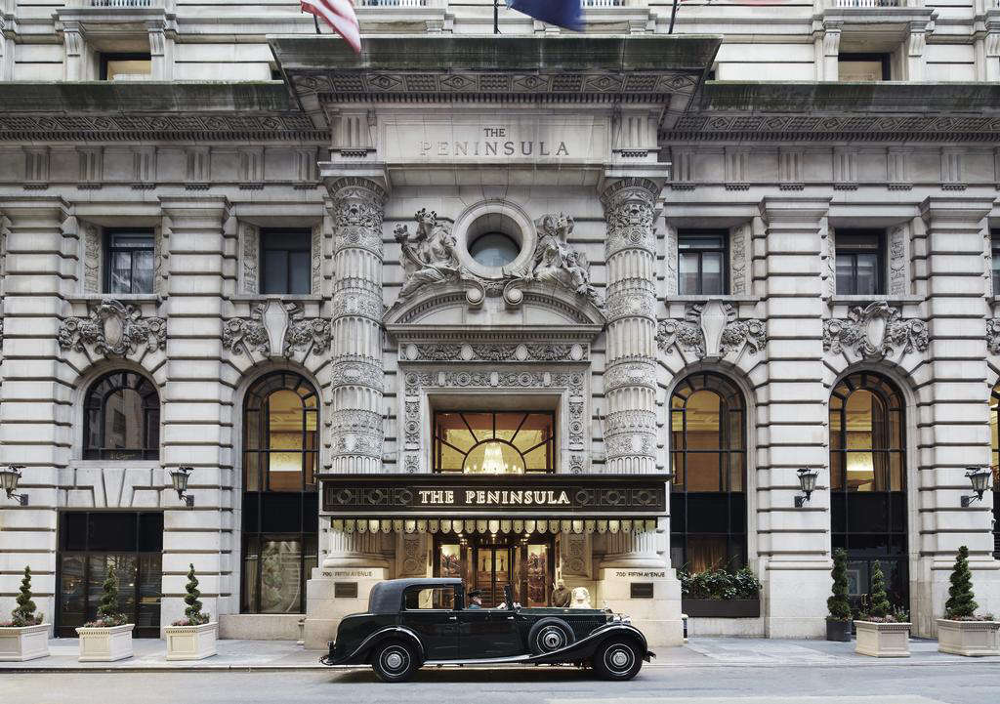
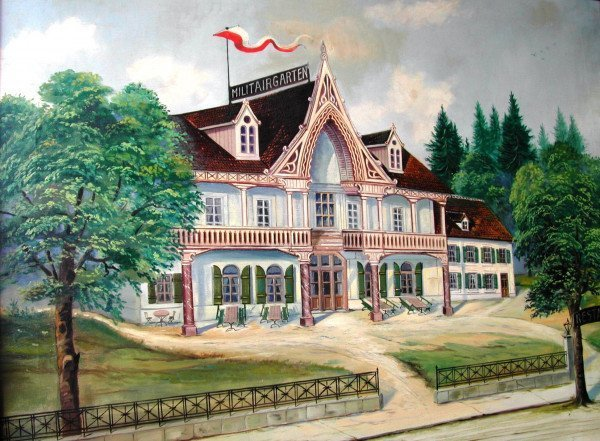
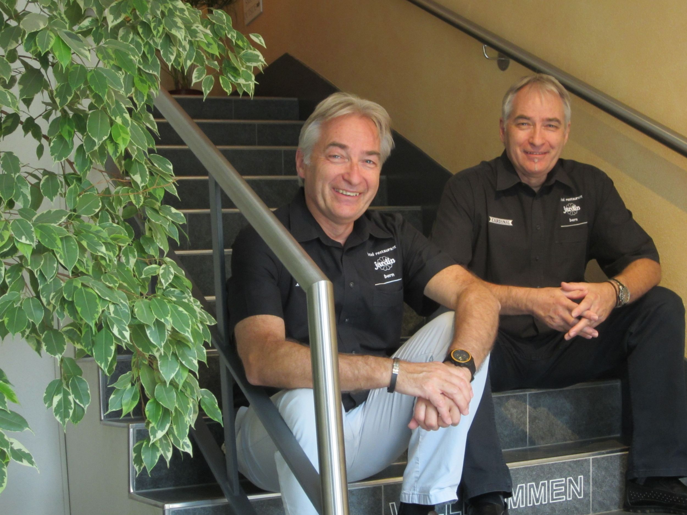
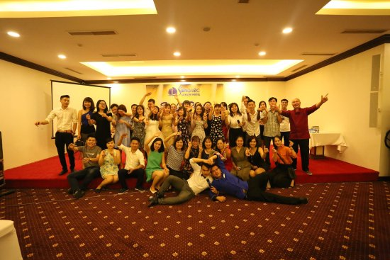

The Hotel Jardin Bern was built under the old name "Militärgarten" (military garden) after the turn of the century.
As far back as the 19th century (1890), there was a restaurant called "Militärgarten" exactly where the Hotel Jardin
Bern stands today. The military barracks of Bern, a large and effective armory, were in the beginning the only other
buildings in the area. For this reason, most of the clientele of the Restaurant Militärgarten were military
personnel, employees at the barracks, and staff at the armoury.
1900 - AN AREA IS CREATED
On this side of the Aare, a residential area gradually developed, mainly after the construction of the Kornhaus
bridge and the Lorraine bridge. Around 1928, today's building was built, which is now part of an appended row of
houses. An important part was the large hall, which is still in use today.


1953/54 - DISCORAMA JARDIN
In the years 1953/54, Fritz and Margrit Balz-Beetschen took over the business. Evening dancing in the large hall was
changed into a disco, one of the first discos in the country under the name Discorama Jardin. The disco has been
maintained for decades as Disco-Dance Jardin with great success

1970 - THIRD GENERATION
Around 1970, Fritz Balz was able to purchase the property from the Cardinal brewery. After the death of Fritz Balz
in 1985, his twin sons Daniel Balz and Andreas Balz took over management of the company in the third
generation.
1985 - HOTEL BUSINESS
The house was expanded to a hotel business and was given the new name Hotel Restaurant Jardin. That was based on the
already existing nickname Jardin. Since then, numerous reconstructions and renovations have been carried out, so
that a charming and, in spite of its age, modern and energetic culinary establishment stood exactly where the
military garden stood in 1880.

2017 - HOTEL JARDIN BERN IS READY FOR THE FUTURE
From 2017 onwards, a new era began at the Jardin. In spring, all hotel rooms were completely renovated and equipped
with the latest technology. Special attention was paid to sound insulation; so that the quiet location matches the
quiet rooms within the house. In autumn, the hotel was newly organized, made fit for the future. The restaurant was
definitely closed to make room for additional new hotel rooms. The construction was finished in the end of 2017 and
a newly orientated hotel Jardin was able to launch successfully into 2018.


2019 - A PERSONEL ANNIVERSARY
In autumn Mrs. Margrit Balz-Beetschen, the mother of the two shop owners, grandmother of five and since this year
also great-grandmother, was allowed to celebrate her hundredth birthday with her whole family. The mayor of the city
of Berne personally delivered congratulations and a present to the centenary celebrators. The visit took place in
the Jardin and the jubilarian welcomed the distinguished guest with great pleasure - Newspaper story from Anzeiger
für das Nordquartier.

2020 - COVID-19 CRISIS
The year of the worldwide "Corona Pandemic". None of us have ever experienced this before and the health of the
world's population has not been in such focus for a hundred years. In addition to the suffering of those affected,
the economic situation has suddenly turned into a global crisis. Nothing is what it used to be - and a lot will
probably change in the future. The Hotel Jardin is also affected, but fortunately not in terms of health. Due to the
travel bans and cancellations of all trade fairs, meetings and activities, the hotel stood virtually empty for
months.